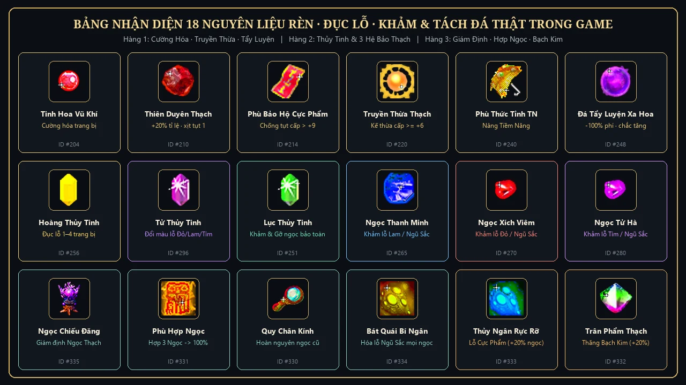

Hướng Dẫn Toàn Tập NPC Thợ Rèn Huyền Bí (Thần Bí)
NPC Thợ Rèn Huyền Bí (Thợ Rèn Thần Bí) là bậc thầy chế tác tinh xảo bậc cao nhất trong Kiếm Võng Giang Hồ, phụ trách toàn bộ 5 đại nhánh chuyên sâu mà Thợ Rèn thường không làm được: Hủy Khóa Vĩnh Viễn, Chuyển Đổi Vũ Khí / Tọa Kỵ / Bộ Đồ, Chiết Xuất & Khắc Kết Tinh 14 Vị Trí, Hệ Thống Bảo Thạch Toàn Tập và Lò Bát Quái (cùng tính năng Đặt Lại Ngũ Hành Ấn & Trang Sức).

1. Hủy Khóa Vĩnh Viễn Trang Bị & Vật Phẩm
Gỡ bỏ hoàn toàn trạng thái khóa giao dịch trên trang bị, tọa kỵ và bảo thạch/nguyên liệu để bạn tự do bày bán sạp hoặc chuyển đồ, gồm 2 chế độ:
- Hộp Đặt Vật Phẩm (1 – 5 món): Kéo từng món cần hủy khóa vào ô luyện, xem trước rõ ràng rồi bấm Xác Nhận.
- Hủy Khóa Nhanh (1 chạm): Tự động gỡ khóa toàn bộ trang bị đang mặc và trong Hành Trang ngay lập tức.
2. Chuyển Đổi Vũ Khí · Tọa Kỵ · Bộ An Bang · Bộ Định Quốc
| Hạng Mục Chuyển Đổi | Phí & Điều Kiện | Hiệu Quả & Bảo Toàn |
|---|---|---|
⚔️ Hoán Đổi Thập Đại Thần Binh (6040–6049) | Sở hữu Vũ Khí Thần Binh đang mặc hoặc trong túi | Đổi sang 1 trong 10 loại Thần Binh phái khác — bảo toàn 100% +Cấp cường hóa, Tiềm Năng, Lỗ Đục, Bảo Thạch & toàn bộ dòng đã khắc! |
| 🐎 Chuyển Kỹ Năng Tọa Kỵ | 100.000 Xu · Tọa Kỵ đã giám định | Quay lại kỹ năng +Cấp môn phái khớp đúng môn phái nhân vật hiện tại & làm mới thuộc tính ngựa. |
| 💍 Đổi Ngũ Hành Bộ An Bang / Trang Sức | 100.000 Xu | Chọn trực tiếp 1 trong 5 hệ: Kim (Kháng Độc) · Mộc (Kháng Lôi) · Thủy (Kháng Hỏa) · Hỏa (Kháng Phòng) · Thổ (Kháng Băng). |
| 🛡️ Đổi Thuộc Tính Bộ Định Quốc / Phòng Cụ | 100.000 Xu | Chọn trực tiếp 1 trong 4 hướng chỉ số: Sức Mạnh · Thân Pháp · Sinh Khí · Nội Công cho toàn bộ phòng cụ phù hợp. |
3. Hệ Thống Kết Tinh — Chiết Xuất & Khắc Thuộc Tính (2 Nhánh Tách Biệt)
Cơ chế tinh hoa nhất để chế tạo trang bị cực phẩm nhiều dòng Max Sao (★) bằng cách rút dòng đẹp từ trang bị phôi rồi ghép đè sang trang bị chính. Giao diện tách làm 2 nhánh rõ ràng để tránh thao tác nhầm:
Nhánh 1 · Chiết Xuất Thuộc Tính (Rút Dòng Ra Viên Kết Tinh)
• Bậc Kết Tinh (300–309): Bậc viên Kết Tinh trống phải >= bậc trang bị (bậc 5 → 14).
• Chất Tách (315–328): Chọn chính xác 1 trong 14 vị trí (Hiện 1→Dòng 1, Ẩn 1→Dòng 2, Hiện 2→Dòng 3... Hiện 6→Dòng 11, Ẩn 6→Dòng 12, Đặc Biệt 1–2 ☯→Dòng 13–14).
• Kết quả: Trang bị phôi được giữ nguyên (dòng bị rút hiện trạng thái Đang nghiên cứu), bạn nhận 1 viên Kết Tinh đã chứa dòng (mang theo cả dấu Max Sao ★ nếu dòng gốc đạt trần!).
Nhánh 2 · Khắc Kết Thuộc Tính (Đè Dòng Lên Đồ Chính)
• Viên Kết Tinh sau khi chiết xuất không bị khóa vào 1 loại trang bị duy nhất — có thể khắc tự do lên trang bị mục tiêu bất kỳ.
• Dòng mới sẽ ghi đè trực tiếp vào đúng vị trí tương ứng (kèm dấu Max Sao ★ nếu có), dòng cũ tại vị trí đó biến mất.
• Mẹo cao thủ: Gom các món đồ phụ có 1 dòng cực phẩm Max Sao (Tốc Đánh, Sát Thương %, Hút Sinh Lực, Kỹ Năng +Cấp) rồi chiết xuất tập trung vào bộ Hoàng Kim / Bạch Kim chủ lực!
4. Hệ Thống Bảo Thạch Toàn Tập (Đủ 6 Dịch Vụ Chuyên Biệt)
Trong mục [Bảo Thạch] tại NPC Thợ Rèn Huyền Bí có trọn bộ 6 dịch vụ từ đục lỗ tới di truyền:
| Dịch Vụ | Công Thức & Nguyên Liệu | Chi Tiết Cơ Chế Thực Tế |
|---|---|---|
| ① Đục Lỗ Bảo Thạch | Đồ (từ Lam trở lên) + Hoàng Thủy Tinh (255–258 tuần tự lỗ 1→4) + 50k × thứ_tự_lỗ Xu | Phí Xu lỗ 1→4: 50k / 100k / 150k / 200k Xu. Vũ Khí & Tọa Kỵ tối đa 4 lỗ; Mũ, Áo, Đai, Hộ Uyển, Giày & Trang Sức tối đa 2 lỗ. |
| ② Trang Trí & Mạ Lỗ | • Tử Thủy Tinh (295–298 đúng lỗ 1→4)• Bát Quái Bí Ngân ( 334)• Thủy Ngân Rực Rỡ ( 333) | • 295–298: Đổi màu xoay vòng Đỏ (Xích Viêm) → Lam (Thanh Minh) → Tím (Tử Hà).• 334: Hóa Lỗ Quái Phù Ngũ Sắc — khảm ngọc hệ nào cũng kích cộng hưởng!• 333: Thăng lên Lỗ Cực Phẩm — GẤP ĐÔI (×2) toàn bộ chỉ số cộng hưởng lỗ! |
| ③ Khảm & Gỡ Ngọc (Bảo Toàn 100%) | • Khảm: Đồ + Ngọc đã giám định + Lục Thủy Tinh (250–253 đúng lỗ 1→4)• Gỡ 100%: Chỉ đặt DUY NHẤT 1 Trang Bị | • Nếu lỗ đã có ngọc cũ, ngọc cũ tự trả nguyên vẹn về túi. • Đặt duy nhất 1 trang bị đang có ngọc (không đặt thêm vật phẩm khác) → bấm Xác Nhận sẽ tháo sạch & trả nguyên vẹn 100% toàn bộ ngọc! |
| ④ Giám Định Ngọc Thạch | Ngọc Cấp 1–7 + Cửu Tiêu Ngọc Chiếu Đăng (335) (số lượng = cấp ngọc) | Phân 3 hệ chuẩn: Thanh Minh (260–266, lỗ Lam) · Xích Viêm (270–276, lỗ Đỏ) · Tử Hà (280–286, lỗ Tím). |
| ⑤ Hợp 3 Ngọc & Quy Chân Kính | • Hợp Ngọc: 3 Ngọc cùng loại (cấp 1–6) + Phù 331 (tùy chọn)• Hoàn Nguyên: 1 Ngọc + Quy Chân Kính (330) | • Tỉ lệ hợp gốc: Cấp 1–2 75% · Cấp 3–4 60% · Cấp 5–6 50% (xịt chỉ mất 1 viên phôi!). Kẹp Phù Bảo Hộ Hợp Thành Ngọc (331) = 100% thành công!• 330 đưa ngọc đã mở về chưa giám định để mở lại chỉ số mới. |
| ⑥ Di Truyền Lỗ & Bảo Thạch | Phôi + Đích (tháo ra túi, cùng vị trí) + Đá Truyền Thừa Bảo Thạch (221) | Tốn 1 Đá 221 + 50.000 Xu cho mỗi lỗ (món đích cần chưa khảm ngọc sẵn) → chuyển nguyên số lỗ, phẩm chất Lỗ Cực Phẩm/Ngũ Sắc và toàn bộ viên ngọc sang món mới! |
Bảng So Sánh Cộng Hưởng Lỗ Thường vs Lỗ Cực Phẩm (Thủy Ngân Rực Rỡ 333)
Khi khảm đúng màu ngọc vào lỗ đã mạ (hoặc khảm bất kỳ ngọc nào vào Lỗ Ngũ Sắc), lỗ sẽ kích hoạt thêm dòng Cộng Hưởng tăng dần theo bậc ngọc (Bậc 1 → Bậc 7). Dùng Thủy Ngân Rực Rỡ (333) nâng lên Lỗ Cực Phẩm sẽ nhân GẤP ĐÔI hoàn toàn bảng cộng hưởng này:
| Loại Lỗ Khảm Đúng Hệ | Cộng Hưởng Công / Kháng / Điểm (Bậc 1 → 7) | Cộng Hưởng Sinh Lực / Nội Lực (Bậc 1 → 7) | Cộng Hưởng Chí Mạng / % (Bậc 1 → 7) |
|---|---|---|---|
| Lỗ Màu Thường / Ngũ Sắc | +5 .. +80 | +50 .. +500 | +0.5% .. +5% |
| Lỗ Cực Phẩm (Thủy Ngân 333) | +10 .. +160 (Gấp Đôi!) | +100 .. +1.000 (Gấp Đôi!) | +1% .. +10% (Gấp Đôi!) |
5. Lò Bát Quái — 5 Chế Độ Hợp Thành & Chuyển Đổi
| Chế Độ Lò Bát Quái | Công Thức Đặt Vào Ô Luyện | Kết Quả Thực Tế |
|---|---|---|
| 1. Hợp 3 Trang Bị Cùng Loại | 3× Hoàng Kim cùng loại (3× C5 hoặc 3× C8) | Lên thẳng bậc tiếp theo (C5 → Tinh Xảo C8 → Cực Phẩm C10), giữ nguyên mức cường hóa cao nhất trong 3 món và tăng +20% chỉ số! |
| 2. Thăng Cấp Bạch Kim | 1× Hoàng Kim + 1× Trân Phẩm Thạch (332) (túi cần có sẵn 2× Mảnh Cổ Thần 209) | Nâng lên phẩm chất Bạch Kim, tăng +20% toàn bộ chỉ số & thức tỉnh dòng Thái Cực ☯ (mỗi món nâng 1 lần). |
| 3. Đổi Ngũ Hành Trang Bị | 1× Trang Bị bất kỳ + 1× Chuyển Sinh Đan (237) | Xoay vòng hệ Ngũ Hành: Kim → Mộc → Thủy → Hỏa → Thổ → Kim để khớp dây chuyền kích dòng ẩn (tra bảng Ngũ Hành). |
| 4. Hợp 6 Thủy Tinh → 1 Bậc Cao | >= 6 Thủy Tinh cùng loại (Lục 250–252 · Hoàng 255–257 · Tử 295–297) | Ghép nâng cấp Thủy Tinh lên bậc kế tiếp (Vỡ → Mòn → Lành → Nguyên Vẹn) để đục/mạ/khảm lỗ 2, 3, 4. |
| 5. Lò Bát Quái Đa Năng | Đặt tổ hợp nguyên liệu của bất kỳ công thức nào | Hệ thống tự nhận diện công thức khớp và hiển thị xem trước trực tiếp trước khi bấm Xác Nhận. |
6. Đặt Lại Thuộc Tính Ngũ Hành Ấn & Trang Sức
Quay Lại Dòng Ấn (5800–5809) & Trang Sức (5900–5910) — Dòng Max Sao (★) Giữ Miễn Phí!
• Mở ngay bằng nút Đặt lại bên trong giao diện Cường Hóa Ấn / Trang Sức.
• Ưu đãi cực lớn: Mọi dòng đã đạt trần Max Sao (★) tự động được giữ nguyên MIỄN PHÍ (tốn 0 Hứa Nguyện Châu)! Mỗi dòng quay mới có tới 20% cơ hội nổ thẳng Max Sao.
• Mẹo thực chiến: Quay thường vài lần đến khi nổ 1–2 dòng Max Sao tự giữ miễn phí, rồi mới dùng Hứa Nguyện Châu (336) khóa tiếp các dòng đẹp còn lại!